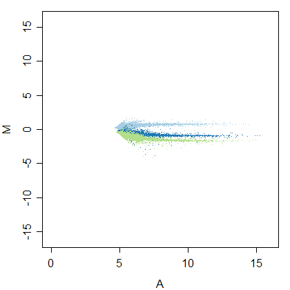
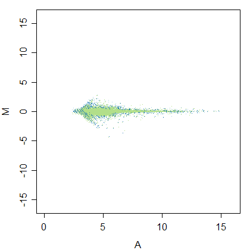
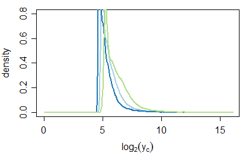
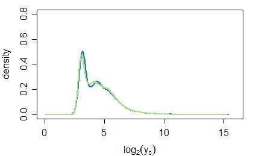
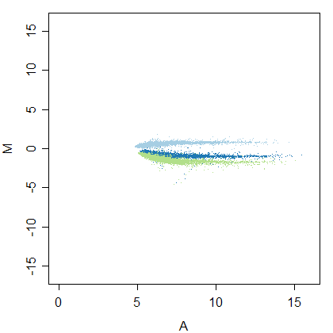
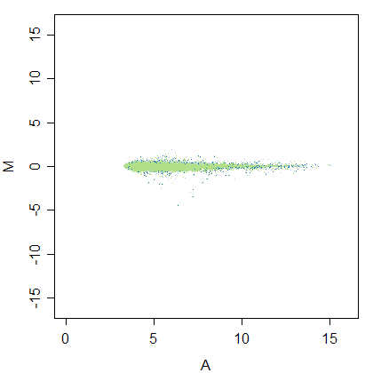
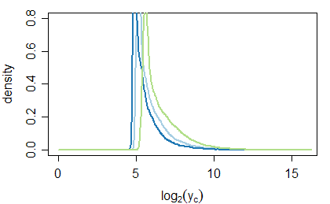
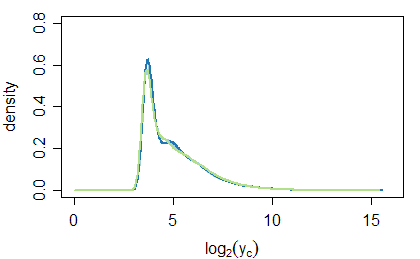

by Henrik Bengtsson 2002-2005.
| # | Assay | intensity1 | intensity2 | ||||||||
|---|---|---|---|---|---|---|---|---|---|---|---|
| a | A0 | b | log2b | #iter | a | A0 | b | log2b | #iter | ||
| 1 | emi1_wt | 21.6 | 4.43 | 1, 0.597, 1.98 | 0, -0.745, 0.989 | 7 | 22.2 | 4.47 | 1, 0.59, 2.03 | 0, -0.762, 1.02 | 7 |
|  |  |
| Figure 1: Between scan log-ratios vs log-intensities for assay 'emi1_wt' and channel 'intensity1' before (left) and after (left) calibration. | |
|  |  |
| Figure 2: Signal densities for assay 'emi1_wt' and channel 'intensity1' before (left) and after (left) calibration. | |
|  |  |
| Figure 3: Between scan log-ratios vs log-intensities for assay 'emi1_wt' and channel 'intensity2' before (left) and after (left) calibration. | |
|  |  |
| Figure 4: Signal densities for assay 'emi1_wt' and channel 'intensity2' before (left) and after (left) calibration. | |